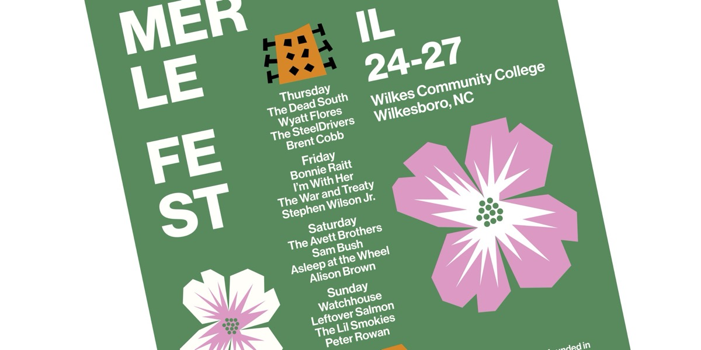
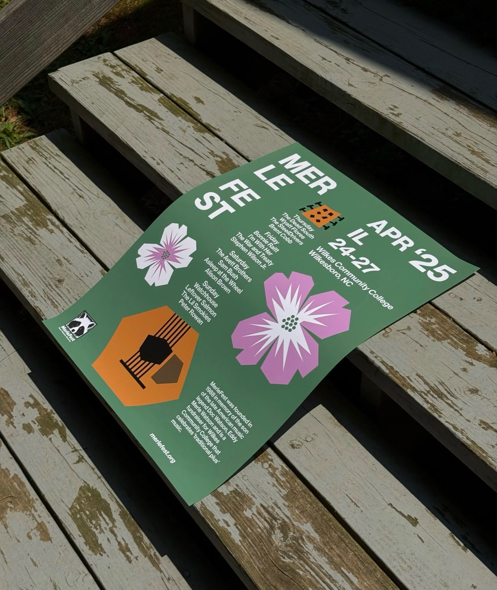
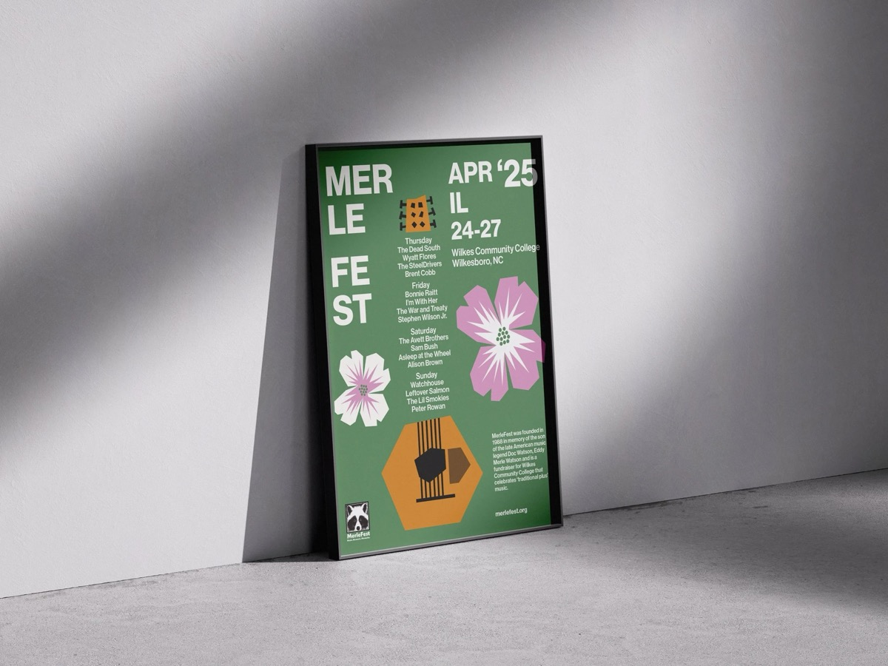
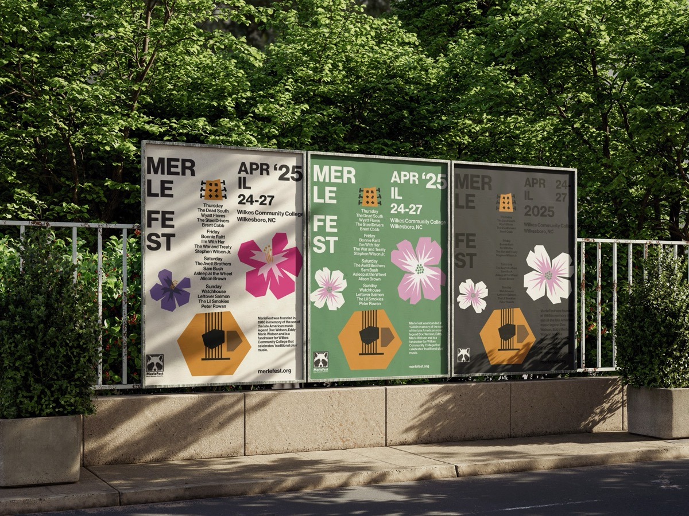
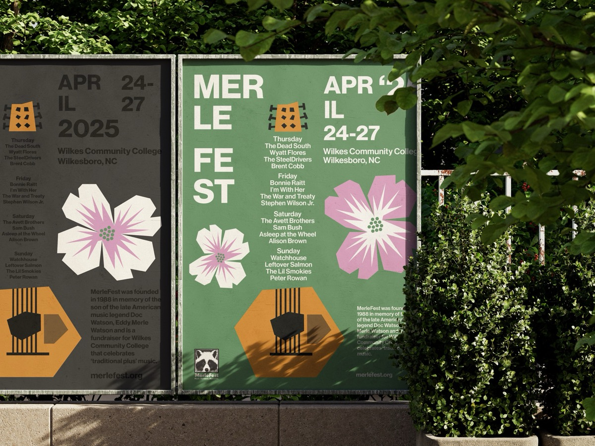

Merlefest ’25 Poster
A poster for the Merlefest 2025 music festival in Wilkesboro, NC, built from elements of Paul Rand’s work.
Overview
This poster was part of a designer re-write project, where I took elements from Paul Rand’s work throughout his career and created a poster for the Merlefest 2025 music festival in Wilkesboro, NC. Featuring rhododendrons and acoustic guitar elements, the poster is an authentic representation of the spirit of Merlefest, while keeping design elements simple and colorful as a nod to Rand’s work.